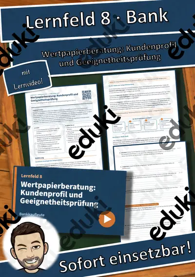
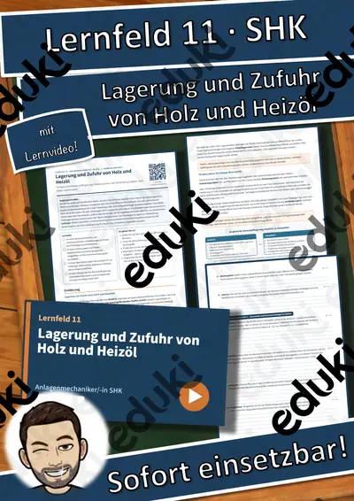
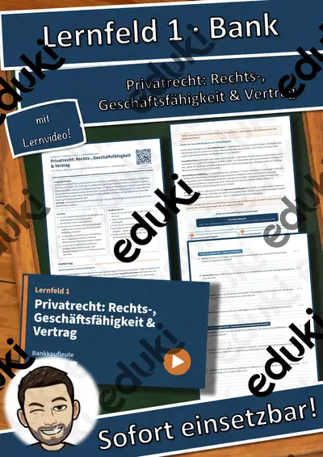
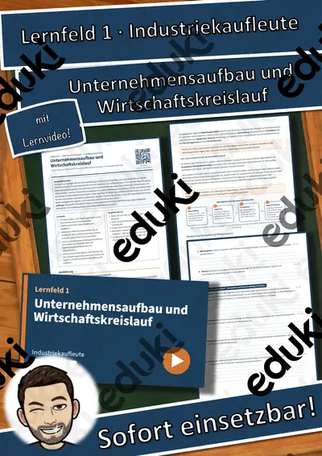

Gratis · jeden Tag neu
Montag, 23. November 2026
Alle Nachrichten-BlätterVon einer Lehrkraft für Lehrkräfte
Über 8.600 fertige Unterrichtsmaterialien mit Lösungen – Lesespurgeschichten, Rechenwelten, Lesespaziergänge und Bastelvorlagen, 3-fach differenziert (★/★★/★★★).
Advent & Winter entdeckenAlle Materialien
Alles zu deinem Fach auf einer Seite.
Komplette Themenpakete zum halben Einzelpreis.
Neu
Die neuesten Materialien aus meinem Shop – frisch geprüft und auf eduki erhältlich.







Dieselben Materialien auf English, Español, Français, Italiano und mehr.
Sprachen und MärkteIn drei Schritten zum fertigen Unterricht.
Von Wasserkreislauf bis Weimarer Republik: 106 Themenseiten mit passenden Arbeitsblättern, geordnet nach Fach und Klassenstufe.
Praxis-Tipps aus meinem Unterricht.
Die Adventszeit bringt viele Bräuche mit sich, die sich im Unterricht aufgreifen lassen. Gleichzeitig ist der Schulalltag vor den Ferien oft von …
Wie überstehen Tiere die kalte Jahreszeit, wenn Nahrung knapp wird und die Temperaturen sinken? Winterschlaf, Winterruhe und Winterstarre sind …
Ein Blatt Papier, ein paar Faltungen, wenige Schnitte – und beim Aufklappen liegt eine Schneeflocke mit sechs Armen auf dem Tisch. Dieser Moment sorgt in …
Von der Grundschule bis zur 10. Klasse, für alle Schularten: Grundschule, Mittel-, Haupt-, Real-, Ober-, Gesamt- und Gemeinschaftsschule sowie Gymnasium. Auf den Materialien steht keine Klassenstufe – so passen sie zu jeder Lerngruppe.
Ja. Jedes Material enthält eine Musterlösung bzw. ein Lösungsblatt. Lesespurgeschichten haben zusätzlich ein Lösungswort zur Selbstkontrolle.
Ein differenziertes Lese- und Sachmaterial: Die Klasse liest eine Geschichte in drei Niveaustufen, folgt Hinweisen über einen Lageplan von Station zu Station und sammelt Buchstaben für ein Lösungswort. Dazu gehören Hörverstehen per QR-Code, Rätselseite, Ausmalbild und Lösungen – in Farbe und als Schwarz-Weiß-Kopiervorlage.
Zwei neue Reihen für die Grundschule. Rechenwelten sind analoge Mathe-Rollenspiele für Klasse 1–4: Die Klasse spielt zum Beispiel einen Marktstand nach und rechnet dabei. Lesespaziergänge sind für Klasse 2–4: Zehn Bildkarten hängen im Raum, die Kinder lesen kurze Abschnitte, suchen die passende Karte und sammeln Buchstaben für ein Lösungswort. Beide gibt es genau 3-fach differenziert (★/★★/★★★).
Auf dem Arbeitsblatt ist ein QR-Code aufgedruckt. Die Lernenden scannen ihn mit Tablet oder Handy und hören den Text – ohne App, ohne Anmeldung. So üben sie Zuhören und Lesen zugleich.
Als PDF zum Ausdrucken, in Farbe und kopierfreundlich in Schwarz-Weiß. Nach dem Kauf bei eduki stehen die Dateien sofort zum Download bereit.
Die Themen orientieren sich an den Lehrplänen aller Bundesländer (z. B. LehrplanPLUS, Bildungspläne, Rahmenlehrpläne) und decken die gängigen Kernthemen der Fächer ab. In der Beschreibung jedes Materials sind die Lehrplanbezüge genannt.
Hinter Snice Unterricht steht eine Lehrkraft aus der Praxis. Alle Materialien entstehen aus der Unterrichtspraxis, werden inhaltlich geprüft und laufend erweitert – damit du weniger vorbereitest und mehr unterrichtest. Mehr über mich →